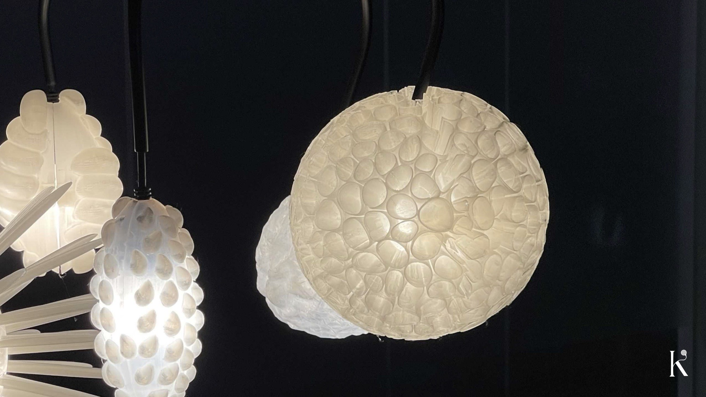

05
Made by hand
I prepared the copper arms, did the electric wiring and assembled the lamp myself.


A pendant lamp for the dining table. For your chosen family: each shade is shaped after a fruit that a community gathers and shares.Meals with meaning.
01
I started with the shared meal: the table where the people you choose gather.
The cacao ceremony became a key reference: a ritual where cacao is shared to open the heart and offer a moment of reflection, out of respect for the land, the plant and the community.
02
Quandong from the central deserts of Australia, hala pandanus from the Pacific Islands, rambutan from Southeast Asia, baobab from Africa, cacao pod from Mesoamerica and paw paw from the eastern United States.
Each fruit has a strong form of its own. Those forms became the shades.
03
Pages of forms before it narrowed to a lamp: a cluster of shades hanging from one stem, like fruit on a branch.
04
I modelled the shades in Rhino and Grasshopper and printed them, testing how each surface holds light.
A pattern that looks right on screen glows very differently with a bulb behind it.
05
I prepared the copper arms, did the electric wiring and assembled the lamp myself.
06
The shades hang together from one stem, each a different fruit, all lit at once.